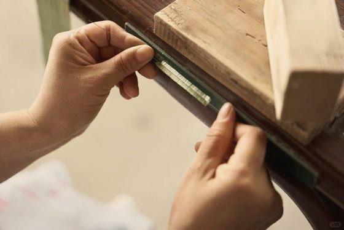
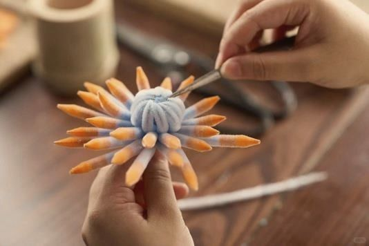

The Craft
Three Steps to a Bloom工 艺

01
Twisting勾条
Copper wire grips combed silk and is twisted into a velvet strip: the stuff of every petal, leaf and stamen.
铜丝夹住丝绒，捻搓成绒条。

02
Trimming打尖
Fine scissors shape the strip into round petals, pointed leaves and crescent tips. A steady hand matters.
尖头小剪逐口修剪出瓣形与叶形。

03
Assembling传花
Tweezers build the flower layer by layer, bound with copper. “Thirty percent making, seventy percent shaping.”
镊子逐层组合，“三分做花，七分造型”。